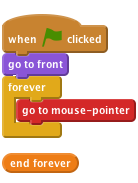
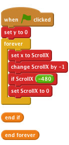
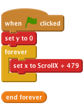
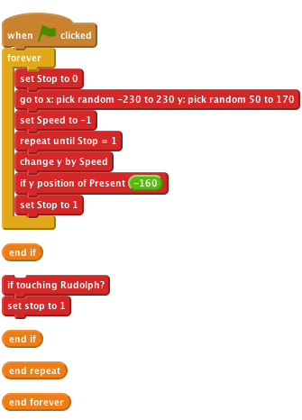
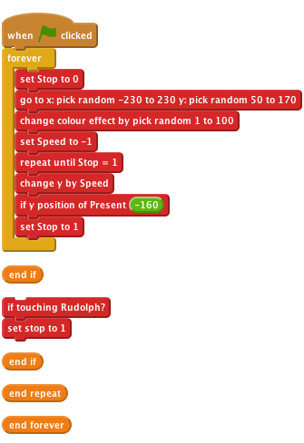
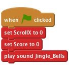
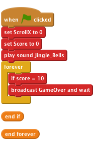
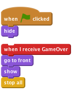

Level 2
Christmas Capers
Introduction: In this project we’ll create a game with scrolling backgrounds, scoring and a festive game over screen. A disaster in a toy factory has sent presents flying into the sky, help Rudolf to save Christmas by catching the presents!


Click the green flag and move the mouse, does Rudolph follow the mouse?

Click the green flag, do the hills move? What happens as the hills move to the side of the screen?
10 Let’s fix the issue with the snowy hills flickering when they reach the right of the screen. Add more hills to the stage use the new sprite from file button to add the Snow sprite to the project again (use the SnowHills.png file). 11 Rename the sprite to Snow2. 12 Add the following script to the Snow2 sprite to allow the 2nd set of hills to follow closely behind the first:

Click the green flag, do the hills move? Has the issue with the flickering trees been fixed?
Save your project
Stop and make it for this sprite only, then uncheck the box next to it to remove it from the stage. This will be used to control when the present should be removed from the game.Speed and make it for this sprite only, then uncheck the box next to it to remove it from the stage. This will be used to control the speed that the present falls down the screen.pick random to make the present appear in a different place each time.touching [ Rudolph ] command we can make the present disappear when touched, we can use this later to keep a score.
Click the green flag, do the presents fall from the sky? Do they disappear when Rudolph touches them or they hit the ground?
7 Let’s make the game more interesting by changing the colour of the presents each time they fall. Do this by using the change colour command. 8 Change the speed of each present by replacing set Speed to -1 with the pick random command, try different values such as -10 to -1. Your script should now look like this.

Click the green flag, do the presents fall at different speeds and colours?
Score and make it for all sprites. Leave this variable ticked so it appears on the screen.play drum command and also change [ score ] by 1 when Rudolph touches the present.
4 Let’s add some music to the game, import the sound file Jingle_Bells.mp3 to the Stage.

5 Add the following script to the Stage, this will set our score to 0 when the game is started. It will also play Jingle Bells while the game is being played.
Note, if at first the music sounds ‘choppy’ save your project, close Scratch and then open your project again.
Click the green flag, does the score change when Rudolph touches a present?
SAVE YOUR PROJECT
broadcast a GameOver message.
hide the picture when the game starts and show it when the GameOver message is received.
Click the green flag, does the score change when Rudolph touches a present?
SAVE YOUR PROJECT
Well done you’ve finished, now you can enjoy the game. Have a very Merry Christmas!